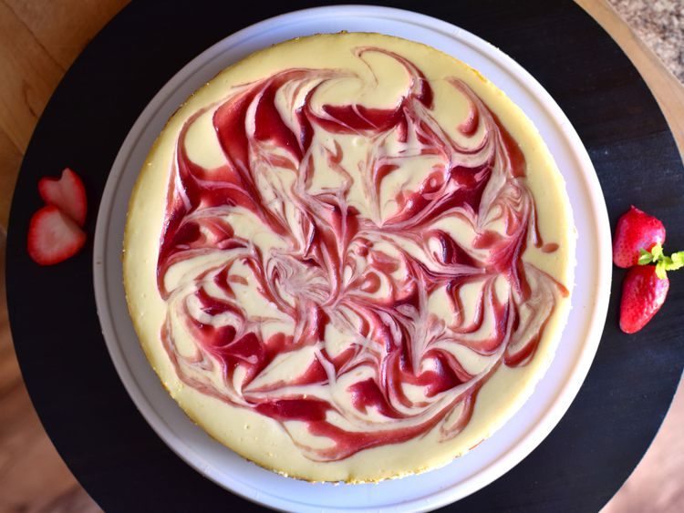

Strawberry Cheesecake

Description:This strawberry cheesecake has a graham cracker crust and creamy filling with swirls of sweetened strawberry sauce. It's perfect for any special occasion!
Ingredients
Crust
- 1 ¼ cups graham cracker crumbs
- ⅓ cup butter, melted
- ¼ cup white sugar
- 2 teaspoons ground cinnamon, or to taste
Filling
- 2 (10 ounce) packages frozen sweetened sliced strawberries, thawed and drained
- 1 tablespoon cornstarch
- 3 (8 ounce) packages cream cheese, softened
- 1 (14 ounce) can sweetened condensed milk
- ¼ cup lemon juice
- ½ teaspoon vanilla extract
- 3 large eggs
- 1 tablespoon water (Optional)
Home